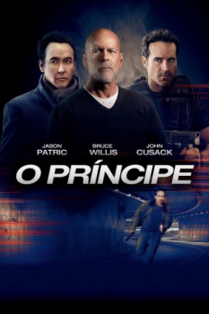

O Príncipe (2014)


Misericórdia é para os fracos

Avaliação (TMDb):


4.9/10 (386 votos)
Avaliação (Usuário):
Outro Título:The Prince
País:United States, 93 minutos
Idiomas falados:Inglês, Português
Gênero(s):Suspense, Ação
Diretor(s):Brian A. Miller
Codec:MPEG-2 (DVD)
Número: 4015
Sinopse:
Um assassino aposentado deve voltar à ativa e confrontar um antigo inimigo quando a sua filha é sequestrada.
Elenco:
Bruce Willis, Jason Patric, John Cusack, Jessica Lowndes, Gia Mantegna, Rain, 50 Cent, Don Harvey, Jesse Pruett, Didi Costine
Tipo de mídia: DVD5,
Legendas: Português,
Alugado: Não
Tela: 2.35:1